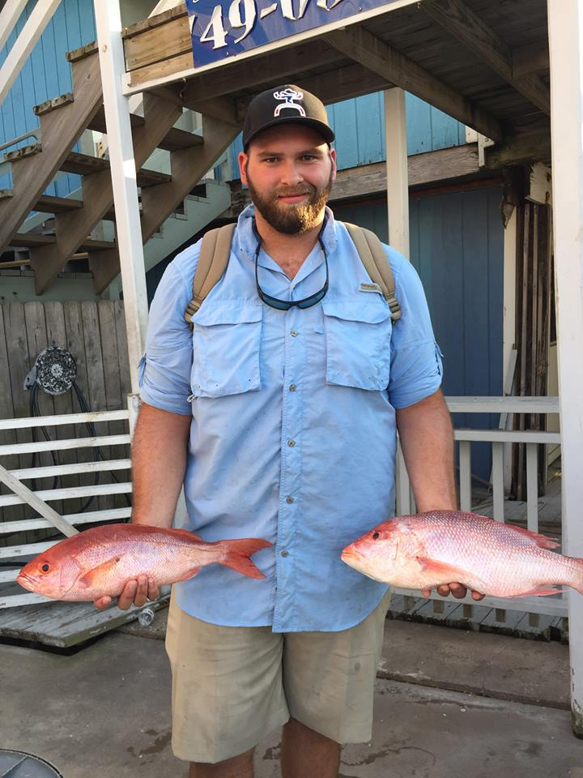

About Me
Hi there! I'm Matthew Wilson but everyone I know calls me Wilson or most of the time I get the good 'ol fashion "Wilsoooooooooon" from everyone's favorite movie (because of Tom Hanks obviously). I started going by my last name in high school when I was in football, it was big in football for coaches to call people by their last names. I kept going by my last name because I met my wife in high school and she knew me as Wilson just like everyone else so when introduced to her family I was "Wilson". After high school I went through the fire academy and EMT school where I got all my certifications to be a fire fighter. After doing that for a while I realized that I really didn't like the medic side of things which wasn't very good since 90% of calls for a fire department are for a medical incident.
After deciding I didn't want to be in the fire department anymore I went into something way more low key and worked retail at Cavenders in south Austin. Retail was definitely a different kind of beast working around customers of every kind. After working retail for multiple years I started to miss working in public service so I started my search again. I located a job working behind the scenes in a desk job with the Kyle Police Department as a dispatcher. I am still working this job part time after working it full time for over 3 years on night shift.
My wife is a nurse currently working night shifts for the hospital and working on going back to school for her further education. Our goal is to get all of our schooling done and be able to go wherever we want with our jobs and be able to start a family. With this goal in mind I am working towards my future in computer science with the hopes of finding a good job in a great place.